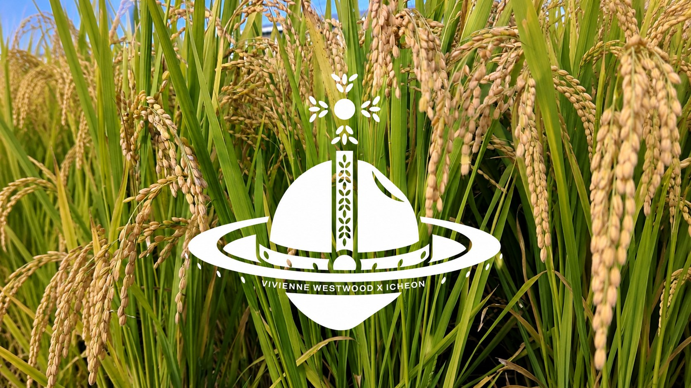
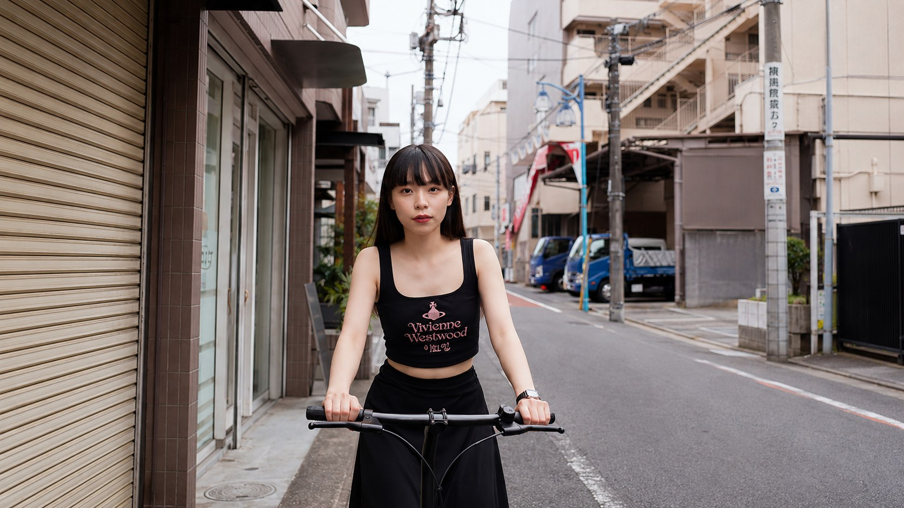
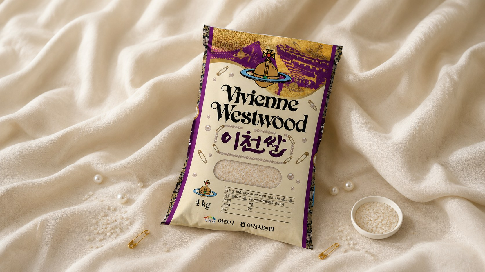

JULY 2026
VIVIENNE WESTWOOD
LOOKS AT ICHEON
비비안이 바라본 이천 쌀

우주의 저 끝, 비비안이라는 황금빛 행성에서 한 톨의 쌀이 출발했다. 그것이 지구의 작은 마을 이천에 닿았을 때, 사람들은 묻지 않았다. “얼마예요?” 대신 이렇게 물었다. “어떻게 길렀어요?” 비비안 웨스트우드가 평생 옷으로 말해온 한 문장이 있다. 그 문장은 런던의 런웨이가 아니라, 이천의 논두렁에서 더 오래, 더 조용히 살아지고 있었다. 이 아카이브는 패션이 외친 철학과, 한 톨의 쌀이 600년간 지켜온 철학이 사실은 같은 말이었다는 이야기다.
BUY LESS, CHOOSE WELL, MAKE IT LAST 적게 사고, 잘 고르고, 오래 쓴다

비비안 웨스트우드는 패션 디자이너이기 이전에 환경 운동가였다. 그녀가 사람들에게 남긴 메시지는 한 줄로 요약된다. “Buy less, choose well, make it last.” 적게 사고, 잘 고르고, 오래 쓰라는 것. 핵심은 양이 아니라 품질이었고, 그녀는 값싼 물건을 잔뜩 만들어 결국 매립지로 보내는 산업의 방식을 반복해서 비판했다. 펑크의 상징이었던 그녀가 정작 강조한 건 ‘오래가는 것’이었다는 점은 의미심장하다. 반항이란 더 화려한 것을 사는 게 아니라, 쉽게 버려지지 않는 것을 택하는 태도였다. 그 시선으로 지구를 내려다본다면, 가장 펑크한 장소 중 하나는 의외로 한국의 한 시골 마을일지도 모른다.
